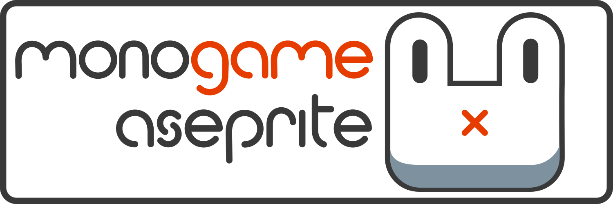

MonoGame.Aseprite
 MonoGame.Aseprite is a free and open source library for the MonoGame Framework that assist in importing Aseprite files into your game project. No need to export a spritesheet from Aseprite and ahve to deal with PNG + JSON import. With MonoGame.Aseprite, you can use the Aseprite file directly.
MonoGame.Aseprite is a translation layer on top of my other library AsepriteDotNet. AsepriteDotNet performs all of the file parsing and loading, then MonoGame.Aseprite provides utility classes to transform that data into commonly used types in a game such as Sprite, TextureAtlas, SpriteSheet, Tileset, and Tilemap.
Caution
If you plan to work only with the AsepriteFile and not use the utility types from the MonoGame.Aseprite library provided, it might be more beneficial for you to use the AsepriteDotNet base library instead.
Missing or Incorrect Documentation?
If you find that any information in the documentation is incorrect, confusing, or documentation for something is completely missing, please open an issue on the GitHub repository for these documents. Alternatively you can join the MonoGame.Aseprite Discord and let me know. Links for both are in the footer of the site.
What Next?
- If you're just getting starting, begin with the Installation document in the Getting Started section.
- Join the Discord to ask questions or keep up to date. Or to just say hello and share projects your working on.
- Found an issue with the library? Submit an issue on GitHub.
- Follow me on socials?